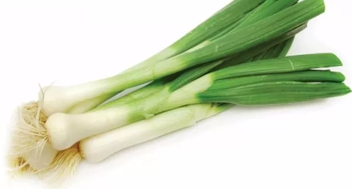

¿Qué es el Ramen?
El Ramen (ラーメン) es un plato de fideos en sopa de origen chino que se ha convertido en el plato más popular en Japón.
Es un plato barato, sabroso y uno de los mejores ejemplos de la comida rápida japonesa.
Pero, además, su popularidad ha traspasado las fronteras de Japón.
Así, tras el sushi, el ramen se ha convertido en uno de los platos japoneses más conocidos y apreciados por los paladares occidentales.
Evidentemente la descripción anterior queda algo corta, porque los caldos que se usan llevan muchos ingredientes y horas de preparación.
Además, lleva multitud de ingredientes adicionales que le dan ese sabor con tanto umami ("sabroso" en japonés).
Y, por si fuera poco, existen tantas variaciones que cualquiera puede encontrar un cuenco de ramen que se adapte a sus gustos.
Para hacer un cuenco o bol de ramen sólo se necesitan cuatro componentes básicos:
Fideos, Caldo, Guarniciones y el Tare (más conocido como "Agente Saborizador").
Aunque decirlo así puede resultar engañosamente simple, ya que las opciones que hay en cada uno de ellos es muy grande.
A continuación profundizaremos un poco más en cada uno de ellos:
Fideos
Los fideos que se usan en el ramen están hechos de agua,
harina de trigo y kansui, que es una solución de carbonato potásico y carbonato sódico.
Aunque existen muchos tipos de fideos, los más populares suelen ser de grosor medio y completamente lisos.

Caldo
El alma de un cuenco de ramen es, sin duda, el caldo.
No es algo tan diferente de lo que ocurre con muchos platos occidentales como los cocidos y las sopas.
Al final es añadir ingredientes de calidad y tener paciencia para que cuezan durante muchas horas.
De esta forma el caldo resultante estará repleto de umami y será delicioso.
Los caldos para el ramen son muy diversos y su base puede ser vegetal, de pollo, de cerdo, de pescado, o incluso mezclando estos ingredientes.
Según la proporción de estos ingredientes principales junto con la del resto de componentes, el resultado será totalmente diferente.
Ejemplos de caldos pueden ser:
-
Shoyu Ramen: El caldo se hace con huesos de pollo y dashi, sardinas o katsuobushi,
al que se le añade luego salsa de soja (shoyu) y rayu (extracto de pimiento rojo con aceite de sésamo).
De esta forma, el caldo adquiere un toque oscuro.
-
Miso ramen. El caldo e hace con huesos de pollo, pero se le añade miso (generalmente, miso blanco).
El resultado es un caldo de color crema, bastante denso.
-
Tonkotsu ramen. La base de este caldo son los huesos de cerdo y una larga cocción.
Es típica del norte de Kyushu y da como resultado un caldo denso y untuoso de color blanquecino,
gracias al colágeno y tuétano de los huesos.
Guarniciones o toppings
Aunque el caldo y los fideos son fundamentales, si el ramen no tuviera nada más no estaría completo.
De hecho, por muy buenos que fueran fideos y caldo, le faltaría algo.
Y es que son los toppings o guarniciones los que complementan el plato.
Ejemplos de estos pueden ser el chashu (panceta de cerdo mariada), ajitama (huevo cocido a presion),
negi (cebolla de verdeo), narutomaki (comunmente conocido como Naruto, es una lámina de pastel de pescado) y la famosa alga nori.

El tare, el secreto mejor guardado
El tare (垂れ) o «agente saborizador», en el ramen es una salsa muy concentrada que se coloca en el cuenco antes de añadir el caldo.
Por eso a menudo pasa desapercibido.
No es raro que el comensal piense que todo el sabor y umami proviene únicamente del caldo y los ingredientes usados en su preparación.
Generalmente existen tres tipos básicos de tare, con base de salsa de soja (shoyu), de sal (shio) y de miso.
Estos tres son el origen de tres de los tipos de ramen más populares que ya hemos mencionado.